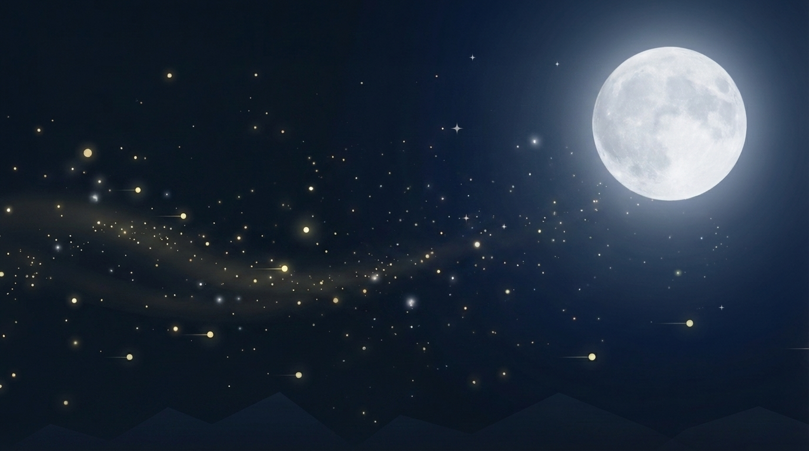

Moon Workspace
月下沉浸笔记页

Lunar Focus Habitat
让文字像夜空里忽明忽暗的星光， 在安静里闪一下，再慢慢落回月色。
用银蓝夜色做背景，把月光压成更安静的底层。输入时，光标附近仍会亮起短暂星芒，但头图本身更像一整片夜色。
Night Draft
月影草稿
字号
18px
银夜草稿
输入时会在光标附近闪出短暂星芒
夜色把房间收得很安静，窗外只剩月光和少量风声。你可以把更缓慢、更深一点的句子放在这里，让它们像夜空里的星点，亮一下，再回到柔和的暗处。